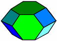
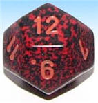
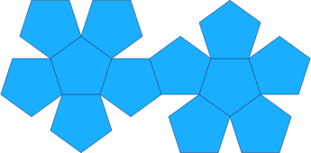

Dodecahedron
Dodecahedron Facts
Notice these interesting things:
- It has 12 Faces
- Each face has 5 edges (a pentagon)
- It has 30 Edges
- It has 20 Vertices (corner points)
- and at each vertex 3 edges meet
- It is one of the Platonic Solids
images/polyhedra.js?mode=dodecahedron
Volume and Surface Area
Volume = (15+7×√5)/4 × (Edge Length)3
Surface Area = 3×√(25+10×√5) × (Edge Length)2
It is called a dodecahedron because it is a polyhedron that has 12 faces (from Greek dodeca- meaning 12).
When we have more than one dodecahedron they are called dodecahedra

When we say "dodecahedron" we often mean "regular dodecahedron" (in other words all faces are the same size and shape), but it doesn't have to be - this is also a dodecahedron, even though all faces are not the same.

12-Sided Dice? Yes! A dodecahedron which has 12 equal faces has an equal chance of landing on any face.
In fact, you can make fair dice out of all of the Platonic Solids.
| Make your own Dodecahedron, cut out the shape and glue it together. |
 |
1848, 1849, 1850, 1851